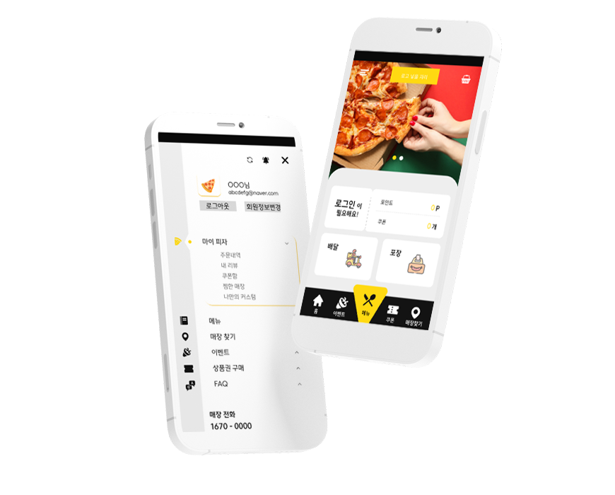

안녕하세요
Graphic

Web/App

03빅스타피자 어플 디자인
빅스타 피자의 모바일 어플 UI디자인을 진행하였습니다. 메인 색을 노란색과 짙은 회색으로 잡아 기존과 다른 느낌을 주었고, 피자모양의 버튼으로 아이덴디티를 나타냈습니다.
사용한 툴
기여도

빅스타 피자의 모바일 어플 UI디자인을 진행하였습니다. 메인 색을 노란색과 짙은 회색으로 잡아 기존과 다른 느낌을 주었고, 피자모양의 버튼으로 아이덴디티를 나타냈습니다.
사용한 툴
기여도